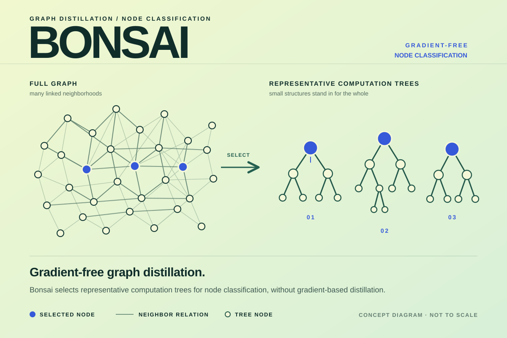
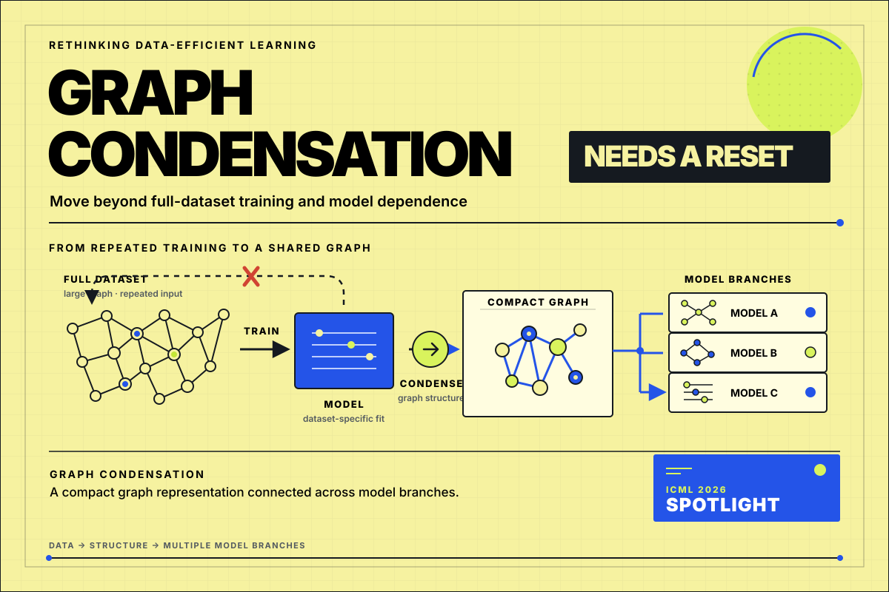
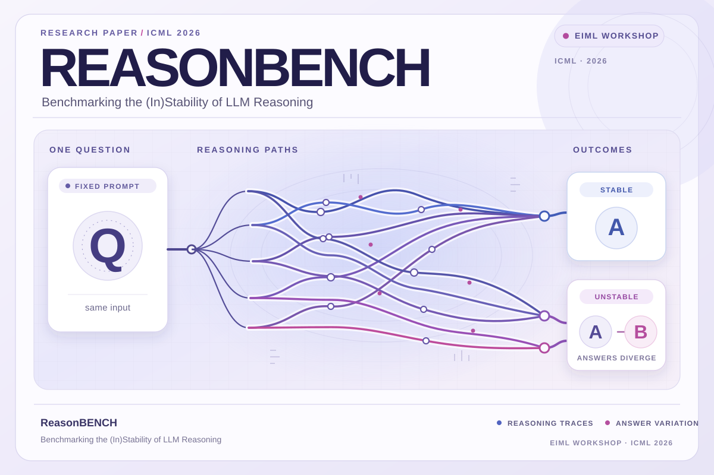
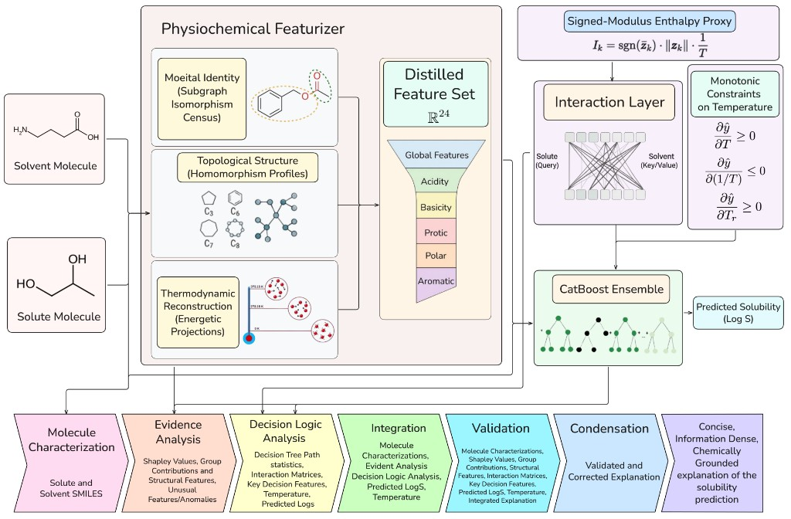
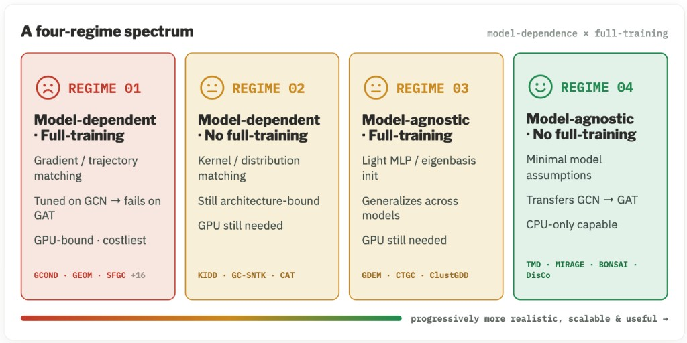
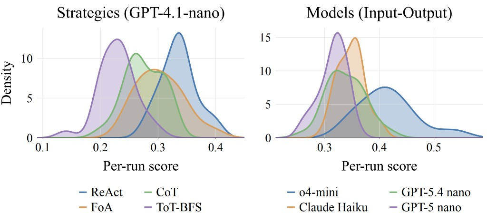
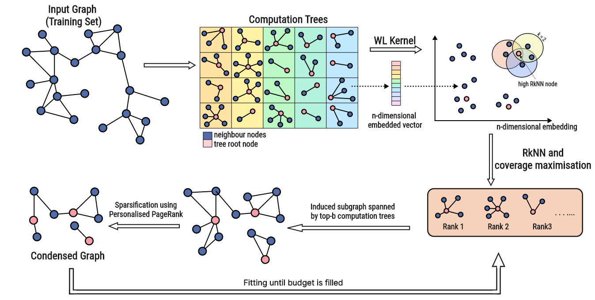
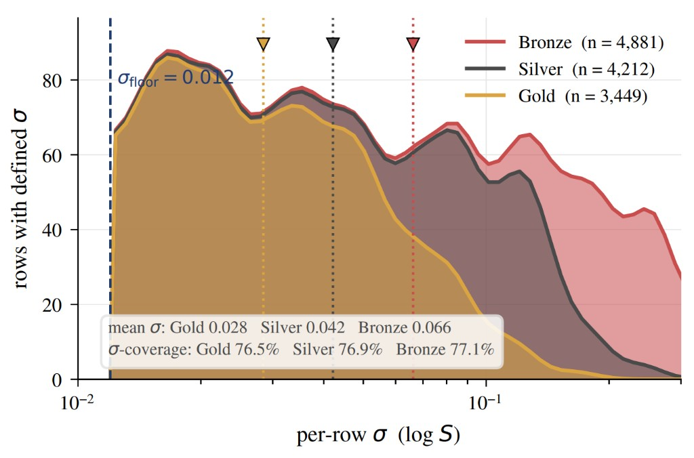

View poster ↗
View poster ↗Panorama
Nearest-neighbor search · 2026 revision
Co-founder & CTO, ramAIn ↗
I work on computer-use agents, efficient learning,
and reasoning systems.
Computer-use agents.
We build AI agents that operate across web portals and legacy systems. Describe the work in natural language; ramAIn executes it through the software your team already uses.
Visit ramain.ai ↗
Graphs, geometry, molecules, and reasoning.
Selected work from 2024–2026.
View poster ↗Nearest-neighbor search · 2026 revision
 View poster ↗
View poster ↗Solubility prediction · ICML 2026

View poster ↗Graph distillation · ICLR 2025

View poster ↗Position paper · ICML 2026 Spotlight

View poster ↗Reasoning stability · ICML 2026 workshop
 View poster ↗
View poster ↗Multi-solvent benchmark · NeurIPS 2026
 View poster ↗
View poster ↗Molecular graph learning · JCTC 2024

An interpretable and fast framework for predicting solubility in aqueous and organic solvents.

A position paper arguing for graph condensation methods that move beyond full-dataset training and model dependence.

Investigating the stability of large language model reasoning: how reliably do reasoning systems behave when their inputs change?

Graph distillation without the expensive full-dataset training loop. Representative computation trees capture the structure that matters for node classification.

A multi-solvent challenge and benchmark for evaluating solubility prediction beyond a single solvent.
7 WORKS / 2024–2026

COMPUTER SCIENCE · RESEARCH
I'm a computer science undergraduate at IIT Delhi, currently on a break to build ramAIn.
My research spans graph learning and distillation, high-dimensional similarity search, molecular prediction, machine unlearning, and the stability of LLM reasoning.
I've worked with researchers at IIT Delhi, Carnegie Mellon, the University of Copenhagen, and Aarhus. Outside of work, I like jazz, random facts, and exploring new places.
PEOPLE & PLACES
Four institutions
across my research
DELHI / INDIA
Graphs & molecular ML
PITTSBURGH / USA
Unlearning & neurosymbolic AI
COPENHAGEN / DENMARK
High-dimensional search
AARHUS / DENMARK
Adaptive reasoning
Prof. Akhil AroraDr. Lars Klein (EPFL)
04 / Writing
Conference reflections and explainers on graphs and molecular learning.
Presenting Bonsai in Singapore, and the conversations and city beyond the poster.
Read the reflectionHow representative computation trees capture neighborhoods in graph learning.
Read the guideRepresenting solute–solvent interactions with virtual bonds in MolMerger.
Read the explainer05 / Contact
Vansh Ramani